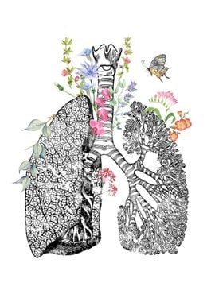

Respiritory
Geeky Medics |
James Gill
General Inspection
Shortness of breath? Speaking?
Brusing, scars or injuries
Treatments or medication
Cyanosis
Hands
Temperature
Capillary refil
Tar staining
Peripheral cyanosis
Clubbing
Radial Pulse
Fine tremmor or flapping
Head & Neck
Conjuntival pallor
Miosis & ptosis
Central cyanosis
Carotid pulse
Lymph nodes
Thorax
Scars
Asymetry
Deformities:Pectus Carinatum &Pectus Excavatum
Chest drains
Brusing
Palpation
Tracheal position
Chest expantion (front & back)
Percussion
6 locations (front)
7 locations (back)
Auscultation
Ask patient to take deep breaths in and out
Listen to 6 locations front
7 locations back
Know the difference between:
Bronchial
Bronchovesicular
Vesicular
vocal resonance
Lung Sounds

Useful Links:
Respiritory Illness Scripts
Lung Sounds
Test Yourself